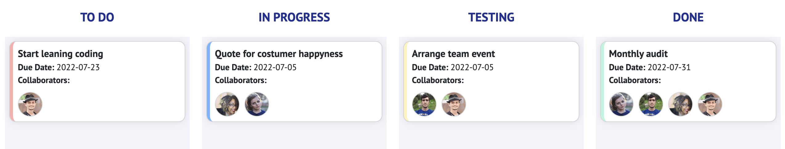

Help
Join is a Kanban board. It gives you an overview of your current work situation and helps
visualising the project flow in agile project management.
This app was built as a training project at Developer Akademie. There is no security layer implemented. The app is not supposed to be used with real life data. Do not enter personal data.
This app was built as a training project at Developer Akademie. There is no security layer implemented. The app is not supposed to be used with real life data. Do not enter personal data.
How to use JOIN
The board
- On the board every task has to pass trough 4 stages
- The tasks can be moved by drag an drop
- On touch-screens open a task by clicking on it and click on the arrows to pass the task to the previous or next stage
- If a task has reached the stage "DONE" it can be deledet
- The color indicates a task by it's urgency from low over Intermediate to high (blue, yellow, red)
- By clicking on a task you can see the details of it 
The backlog
- In the backlog all tasks are stored in a list to get an overview
- By clicking on a task you can see the details of it and by clicking on the arrows you can pass the task to the previous or next stage
Add a task
- Fill the form and choose the urgency and by whoom the task should be processed
- Click on "CREATE TASK" to confirm and create a new task